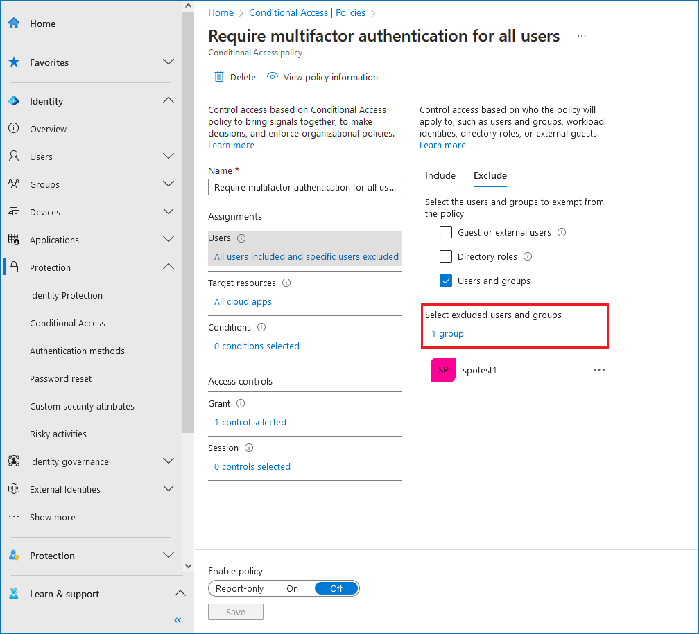
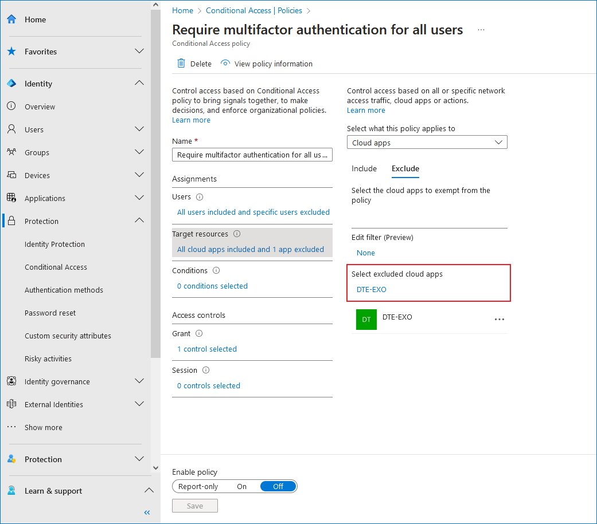

Question
How to disable multi-factor authentication (MFA) for a Netwrix Auditor service account for your Microsoft 365 sources — Entra ID (Azure AD), Exchange Online, SharePoint Online and Microsoft Teams?
Answer
NOTE: To manage policies, the Conditional Access Administrator role is required. Learn more about the role in Azure AD Built-in Roles — Conditional Access Administrator ⸱ Microsoft 🡥.
To disable MFA authentication for your data collecting account in any of Microsoft 365 sources, you can use the Conditional Access feature. It allows you to exclude particular users and apps from the policy. Refer to the following steps for the initial setup:
-
Log in the Entra ID portal, and proceed to the Conditional Access menu located under the Protection section: Microsoft Entra ID — Conditional Access ⸱ Microsoft 🡥.
-
If you do not have a policy configured, refer to the steps in Common Conditional Access Policy — Require MFA for All Users ⸱ Microsoft 🡥. Otherwise, if you have an MFA policy configured, proceed to the next step.
-
In the left pane, select Policies. Select the MFA policy to be edited. You can either select a user to be excluded from the MFA policy or a particular app used.
-
To exclude a user from the MFA policy, click the highlighted text under the Users section. Click the Exclude tab, and check the Users and groups checkbox. Select the service user to be used in the Select excluded users and groups window, and click Select. To complete the setup, click Save in the bottom left corner.
 -
To exclude an app from the MFA policy, click the highlighted text under the Target sources section. Click the Exclude tab, and click the highlighted text under the Select excluded cloud apps. Select the app to be used in the Select excluded cloud apps windows, and click Select. To complete the setup, click Save in the bottom left corner.

-
Refer to the following articles for additional information on data collecting accounts setup for your Microsoft 365 sources:
Related articles
Azure AD Built-in Roles — Conditional Access Administrator ⸱ Microsoft 🡥
Microsoft Entra ID — Conditional Access ⸱ Microsoft 🡥
Common Conditional Access Policy — Require MFA for All Users ⸱ Microsoft 🡥
Microsoft 365 — Permissions for Microsoft Entra ID Auditing ⸱ v10.6
Microsoft 365 — Permissions for Exchange Online Auditing ⸱ v10.6
Microsoft 365 — Permissions for SharePoint Online Auditing ⸱ v10.6